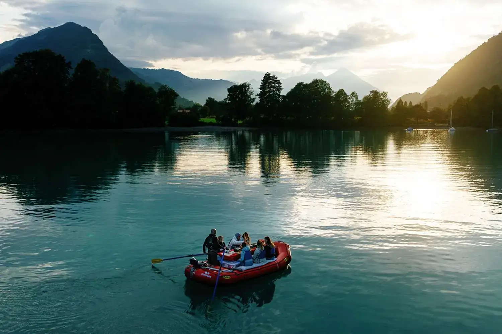
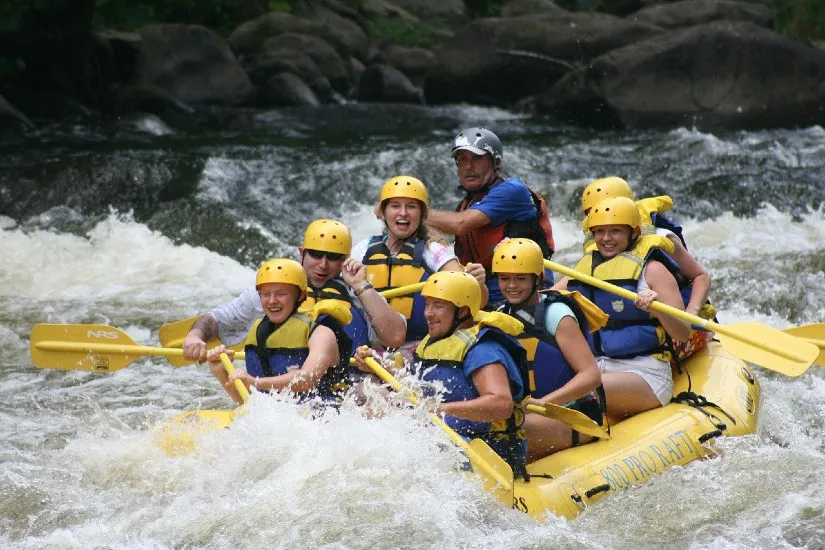
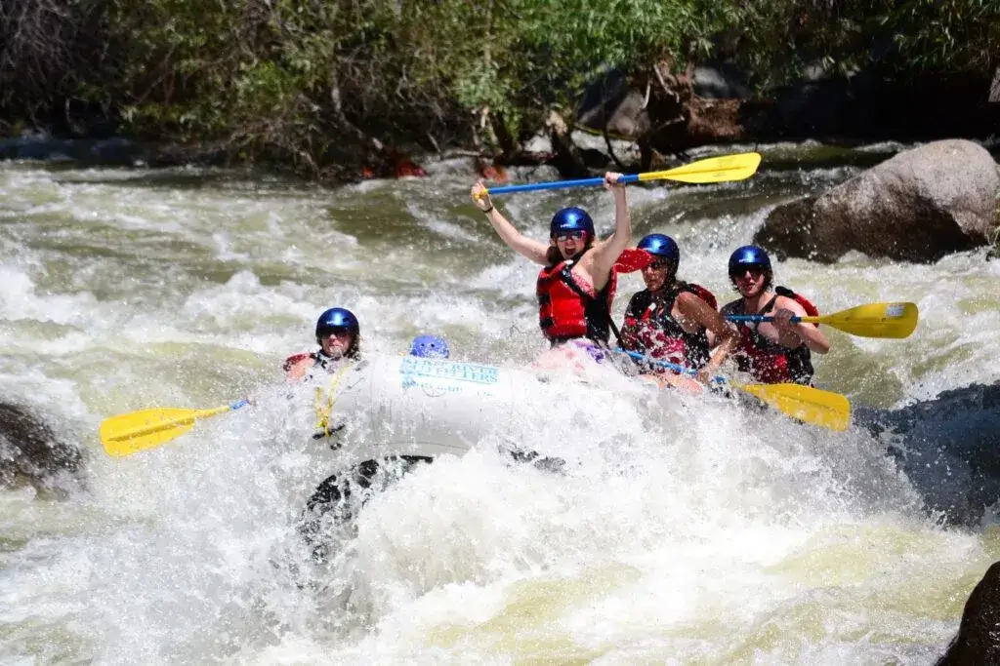
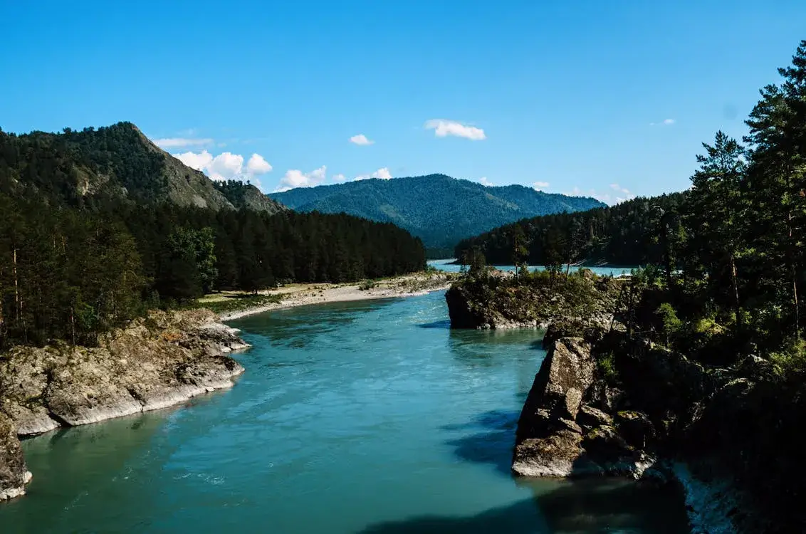

This trip is great for families and beginners. The water is calm, the views are beautiful, and the pace is comfortable for guests who want a relaxing outdoor experience.
White Wolf Rafting offers trips for families, first-time rafters, and adventure seekers. Whether you want a peaceful river float or a powerful white water experience, our guides are ready to help you enjoy the Canadian Rockies safely.
Contact Us

This trip is great for families and beginners. The water is calm, the views are beautiful, and the pace is comfortable for guests who want a relaxing outdoor experience.

This trip is designed for guests who want excitement. You will ride through fast-moving rapids with trained guides who focus on both safety and adventure.

This trip combines adventure and sightseeing. Guests can enjoy mountain views, fresh air, and a balanced rafting route with both calm water and light rapids.
| Trip Name | Difficulty | Time | Best For | Price |
|---|---|---|---|---|
| Family River Float | Easy | 2 Hours | Families and beginners | $65 |
| White Water Rush | Advanced | 3 Hours | Adventure seekers | $95 |
| Scenic Canyon Run | Moderate | Half Day | Nature lovers | $85 |